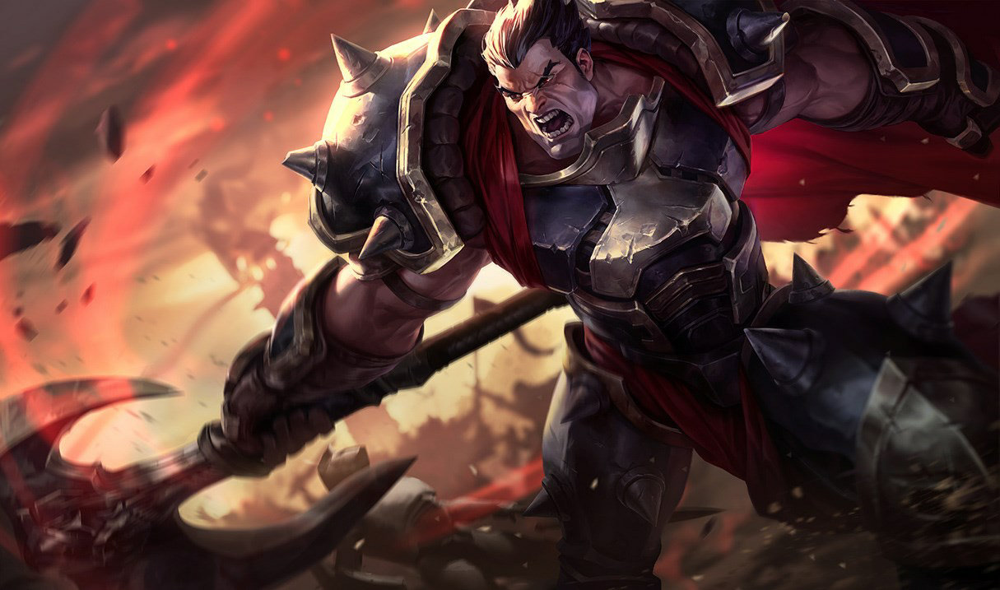

KAYN
La guadaña de las sombras

'El niño no está. El asesino permanece'
Ir a la webEn el siguiente blog se muestran los 3 campeones mas utilizados por Tomibelt
La guadaña de las sombras
'El niño no está. El asesino permanece'
Ir a la webLa mano de Noxus
'La historia solo recuerda a los vencedores. Sé parte de Noxus y serás recordado por siempre'
Ir a la webGran general de Noxus

'He vivido lo suficiente para odiar a todos los hombres. Solo las naciones deben ser veneradas'
Ir a la web